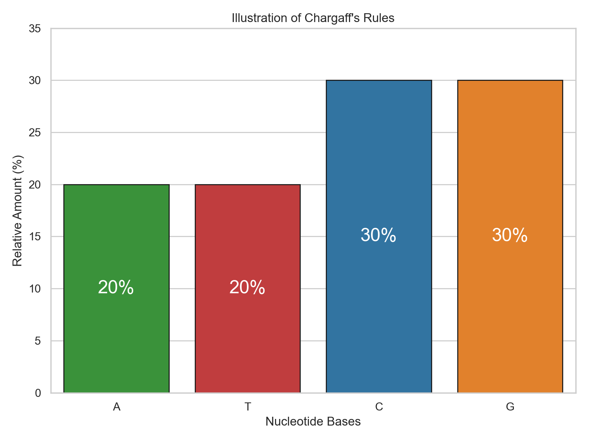
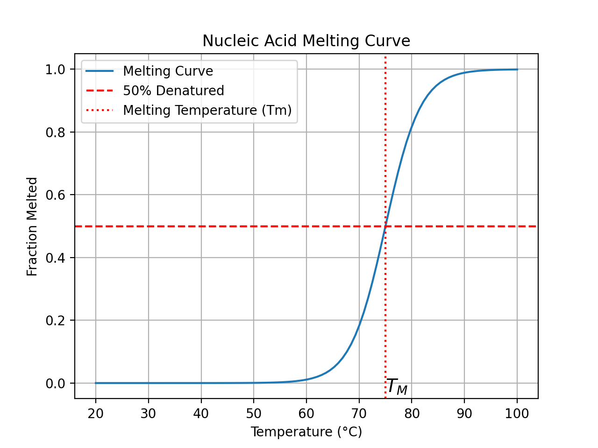

Besides Uracil vs Thymine, there is another chemical difference between DNA and RNA.
RNA has a hydroxyl group on the 2' carbon while there is only a hydrogen attached to the 2' carbon in DNA.
The 2' hydroxyl in RNA causes it to be less stable. It can nucleophilically attack the phosphorous in the phosphodiester linkage, catalyzing the breakage of the link between the two nucleotides.
Secondary Structure
Base Pairing
Hydrogen Bonding
Base-pairing involves hydrogen bonding between two bases on different helices.
This is not the main driver of the formation of double helices, but it does have the following advantages:
Allows for bases to come together without enthalpic penalty from not being able to hydrogen bond with water
Allows for detection of bases and specificity of base-pairing
Canonical Base Pairs
DNA:
Adenine-Thymine (A-T): Forms two hydrogen bonds.
Cytosine-Guanine (C-G): Forms three hydrogen bonds.
RNA:
Adenine-Uracil (A-U): Forms two hydrogen bonds.
Cytosine-Guanine (C-G): Forms three hydrogen bonds.
Chargaff's Rules
Because A is always paired with T, the amount of A must be equal to the amount of T. A similar relationship holds between amount of G and C.
This is known as Chargaff's rules, and it holds very well in DNA, where there is very little mismatching.

import matplotlib.pyplot as plt
import numpy as np
def plot_chargaffs_rules():
bases = ['A', 'T', 'C', 'G']
sns.set_theme(style="whitegrid")
# Fictional relative amounts
amounts = [20, 20, 30, 30] # A:T and C:G have the same amounts
fig, ax = plt.subplots(figsize=(8, 6))
bars = sns.barplot(x=bases, y=amounts,
palette=['tab:red','tab:blue','tab:green','tab:orange'],
ax=ax,edgecolor='k')
# Highlighting the equal amounts
for p in ax.patches:
h, w, x = p.get_height(), p.get_width(), p.get_x()
xy = (x + w / 2., h / 2)
text = f'{h:0.0f}%'
ax.annotate(text=text, xy=xy, ha='center', va='center',color='white',size=18)
ax.set_ylim(0, max(amounts) + 5)
ax.set_xlabel('Nucleotide Bases')
ax.set_ylabel('Relative Amount (%)')
ax.set_title("Illustration of Chargaff's Rules")
#ax.grid(axis='y', linestyle='--', linewidth=0.7, alpha=0.7)
plt.tight_layout()
plt.show()
plot_chargaffs_rules()
Hoogsteen Base-Pairing
Hoogesteen base-pairing is an alternative hydrogen bonding pattern.
Wobble Base-Pairing
In tRNA, the final base in the codon is less restricted than traditional Watson-Crick base pairing.
Base Tautomerism
It is possible for the bases to undergo tautomerization.
Keto groups can convert to enols. Amines can convert to imines. Both of these changes reverse the role of that group being a hydrogen donor versus acceptor.
This changes the hydrogen bonding pattern, promoting base mismatching and thus mutations.
Double Helix
Base Stacking
Much of the free energetic drive for double helix formation comes from base stacking.
There is the enthalpic contribution from pi orbital overlap with the neighboring bases.
There is also an entropic contribution from water not having to solvate the bases.
Example: Ethidium Bromide
Ethidium bromide is an intercalating agent, which means that it can bind between stacked bases.
Ethidium bromide is used for detection and visualization in gel electrophoresis.
Antiparallel
Major and Minor Grooves
As the strands twist around each other, the spatial alignment of the bases results in the formation of two distinct grooves.
The major groove is wider in B form DNA, while the minor groove is roughly half as wide; however, the minor groove is deeper.
Because of the major groove's wideness, it provides more accessible space for proteins to interact because more atoms of the base pairs are exposed.
A Form, B Form, Z Form
A-form
Commonly seen in RNA double helices and DNA-RNA helices
Right handed
11 base pairs per turn
Helix is shorter and wider than B-form
Deep and narrow major groove
B-form
Common conformation for DNA
Right-handed
10 base pairs per turn
Wide, shallow major groove
Z-form
Left-handed
12 base pairs per turn
Less distinction between major and minor grooves
RNA motifs
Since RNA commonly exists in a single-stranded state, unlimke DNA, more variety in structure is observed.
Stem-loops
Single strand RNA base pairs with itself, forming a stem. Unpaired bases between the two segments form the loop. Also known as a hairpin loop.
Bulges
Bulges are short unpaired regions in between paired regions.
Higher Structures
Supercoiling
Physical Properties
Denaturation

GC Content
Because the GC pair has 3 hydrogen bonds while AT has 2, DNA that has a higher percentage of G's and C's in it will be harder to separate.
This is an evolutionary trick that is used by organisms that live in high temperature environments.
UV Absorption
When UV light interacts with molecules, electrons can be excited from their ground state to an excited state. For nucleic acids, the primary absorbing components are the nitrogenous bases. They strongly absorb UV light around 260 nm, making this wavelength ideal for nucleic acid quantification.
Hyperchromic Effect
Upon denaturation (e.g., heating), the UV absorbance of nucleic acids increases, a phenomenon called the hyperchromic effect. This is because the stacked bases in the double-helical structure become unstacked upon denaturation, leading to increased accessibility to UV light and hence higher absorption. Monitoring the hyperchromic effect can help determine the melting temperature \((T_m)\) of nucleic acids, which is a measure of their stability.
Uses
Quantification
Since the absorption of UV light is proportional to the concentration of nucleic acids, spectrophotometers are used to determine the concentration of DNA or RNA in a sample by measuring its absorbance at 260 nm.
Purity Assessment
The ratio of absorbance at 260 nm to 280 nm (A260/A280 ratio) provides information about the purity of a nucleic acid sample. Pure DNA typically has an A260/A280 ratio of ~1.8, while pure RNA has a ratio of ~2.0. Deviations from these values can indicate contamination, often from proteins.